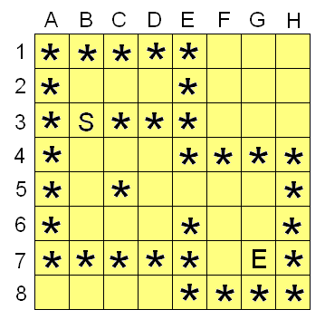

Member Count: 316,431 -
October 24, 2011
[Get Time]


 
|
Scenario #2: Multiple Related DecisionsWhen our program only has to make one decision, our approach can be fairly simple. We loop through each of the options for our decision, evaluate each one, and pick the best. If we have two decisions, we can have nest one loop inside the other so that we try each possible combination of decisions. However, if we have a lot of decisions to make (possibly we don't even know how many decisions we'll need to make), this approach doesn't hold up. For example, one very common use of recursion is to solve mazes. In a good maze we have multiple options for which way to go. Each of those options may lead to new choices, which in turn may lead to new choices as the path continues to branch. In the process of getting from start to finish, we may have to make a number of related decisions on which way to turn. Instead of making all of these decisions at once, we can instead make just one decision. For each option we try for the first decision, we then make a recursive call to try each possibility for all of the remaining decisions. Suppose we have a maze like this:

For this maze, we want to determine the following: is it possible to get from the 'S' to the 'E' without passing through any '*' characters. The function call we'll be handling is something like this: "isMazeSolveable(maze[ ][ ])". Our maze is represented as a 2 dimensional array of characters, looking something like the grid above. Now naturally we're looking for a recursive solution, and indeed we see our basic "multiple related decision" pattern here. To solve our maze we'll try each possible initial decision (in this case we start at B3, and can go to B2 or B4), and then use recursion to continue exploring each of those initial paths. As we keep recursing we'll explore further and further from the start. If the maze is solveable, at some point we'll reach the 'E' at G7. That's one of our base cases: if we are asked "can we get from G7 to the end", we'll see that we're already at the end and return true without further recursion. Alternatively, if we can't get to the end from either B2 or B4, we'll know that we can't get to the end from B3 (our initial starting point) and thus we'll return false. Our first challenge here is the nature of the input we're dealing with. When we make our recursive call, we're going to want an easy way to specify where to start exploring from - but the only parameter we've been passed is the maze itself. We could try moving the 'S' character around in the maze in order to tell each recursive call where to start. That would work, but would be very slow because in each call we'd have to first look through the entire maze to find where the 'S' is. A better idea would be to find the 'S' once, and then pass around our starting point in separate variables. This happens fairly often when using recursion: we have to use a "starter" function that will initialize any data and get the parameters in a form that will be easy to work with. Once things are ready, the "starter" function calls the recursive function that will do the rest of the work. Our starter function here might look something like this: function isMazeSolveable(maze[][])
{
declare variables x,y,startX,startY
startX=-1
startY=-1
// Look through grid to find our starting point
for each x from A to H
{
for each y from 1 to 8
{
if maze[x][y]=='S' then
{
startX=x
startY=y
}
}
}
// If we didn't find starting point, maze isn't solveable
if startX==-1 then return false
// If we did find starting point, start exploring from that point
return exploreMaze(maze[][],startX,startY)
}
We're now free to write our recursive function exploreMaze. Our mission statement for the function will be "Starting at the position (X,Y), is it possible to reach the 'E' character in the given maze. If the position (x,y) is not traversable, then return false." Here's a first stab at the code: function exploreMaze(maze[][],x,y)
{
// If the current position is off the grid, then
// we can't keep going on this path
if y>8 or y<1 or x<'A' or x>'H' then return false
// If the current position is a '*', then we
// can't continue down this path
if maze[x][y]=='*' then return false
// If the current position is an 'E', then
// we're at the end, so the maze is solveable.
if maze[x][y]=='E' then return true
// Otherwise, keep exploring by trying each possible
// next decision from this point. If any of the options
// allow us to solve the maze, then return true. We don't
// have to worry about going off the grid or through a wall -
// we can trust our recursive call to handle those possibilities
// correctly.
if exploreMaze(maze,x,y-1) then return true // search up
if exploreMaze(maze,x,y+1) then return true // search down
if exploreMaze(maze,x-1,y) then return true // search left
if exploreMaze(maze,x+1,y) then return true // search right
// None of the options worked, so we can't solve the maze
// using this path.
return false
}
Avoiding CyclesIf you're keen eyed, you likely noticed a flaw in our code above. Consider what happens when we're exploring from our initial position of B3. From B3, we'll try going up first, leading us to explore B2. From there, we'll try up again and go to B1. B1 won't work (there's a '*' there), so that will return false and we'll be back considering B2. Since up didn't work, we'll try down, and thus we'll consider B3. And from B3, we'll consider B2 again. This will continue on until we error out: there's an infinite cycle. We've forgotten one of our rules of thumb: we need to make sure the problem we're considering is somehow getting smaller or simpler with each recursive call. In this case, testing whether we can reach the end from B2 is no simpler than considering whether we can reach the end from B3. Here we can get a clue from real-life mazes: if you feel like you've seen this place before, then you may be going in circles. We need to revise our mission statement to include "avoid exploring from any position we've already considered". As the number of places we've considered grows, the problem gets simpler and simpler because each decision will have less valid options. The remaining problem is, then, "how do we keep track of places we've already considered?". A good solution would be to pass around another 2 dimensional array of true/false values that would contain a "true" for each grid cell we've already been to. A quicker-and-dirtier way would be to change maze itself, replacing the current position with a '*' just before we make any recursive calls. This way, when any future path comes back to the point we're considering, it'll know that it went in a circle and doesn't need to continue exploring. Either way, we need to make sure we mark the current point as visited before we make the recursive calls, as otherwise we won't avoid the infinite cycle. Scenario #3: Explicit Recursive RelationshipsYou may have heard of the Fibonacci number sequence. This sequence looks like this: 0, 1, 1, 2, 3, 5, 8, 13... After the first two values, each successive number is the sum of the previous two numbers. We can define the Fibonacci sequence like this: Fibonacci[0] = 0
Fibonacci[1] = 1
Fibonacci[n] = Fibonacci[n-2] + Fibonacci[n-1]
This definition already looks a lot like a recursive function. 0 and 1 are clearly the base cases, and the other possible values can be handled with recursion. Our function might look like this: function fib(n)
{
if(n<1)return 0
if(n==1)return 1
return fib(n-2) + fib(n-1)
}
This kind of relationship is very common in mathematics and computer science - and using recursion in your software is a very natural way to model this kind of relationship or sequence. Looking at the above function, our base cases (0 and 1) are clear, and it's also clear that n gets smaller with each call (and thus we shouldn't have problems with infinite cycles this time). Using a Memo to Avoid Repetitious CalculationThe above function returns correct answers, but in practice it is extremely slow. To see why, look at what happens if we called "fib(5)". To calculate "fib(5)", we'll need to calculate "fib(4)" and "fib(3)". Each of these two calls will make two recursive calls each - and they in turn will spawn more calls. The whole execution tree will look like this: The above tree grows exponentially for higher values of n because of the way calls tend to split - and because of the tendency we have to keep re-calculating the same values. In calculating "fib(5)", we ended up calculating "fib(2)" 3 times. Naturally, it would be better to only calculate that value once - and then remember that value so that it doesn't need to be calculated again next time it is asked for. This is the basic idea of memoization. When we calculate an answer, we'll store it in an array (named memo for this example) so we can reuse that answer later. When the function is called, we'll first check to see if we've already got the answer stored in memo, and if we do we'll return that value immediately instead of recalculating it. To start off, we'll initialize all the values in memo to -1 to mark that they have not been calculated yet. It's convenient to do this by making a "starter" function and a recursive function like we did before:
function fib(n)
{
declare variable i,memo[n]
for each i from 0 to n
{
memo[i]=-1
}
memo[0]=0
memo[1]=1
return calcFibonacci(n,memo)
}
function calcFibonacci(n,memo)
{
// If we've got the answer in our memo, no need to recalculate
if memo[n]!=-1 then return memo[n]
// Otherwise, calculate the answer and store it in memo
memo[n] = calcFibonacci(n-2,memo) + calcFibonacci(n-1,memo)
// We still need to return the answer we calculated
return memo[n]
}
The execution tree is now much smaller because values that have been calculated already no longer spawn more recursive calls. The result is that our program will run much faster for larger values of n. If our program is going to calculate a lot of Fibonacci numbers, it might be best to keep memo somewhere more persistent; that would save us even more calculations on future calls. Also, you might have noticed another small trick in the above code. Instead of worrying about the base cases inside calcFibonacci, we pre-loaded values for those cases into the memo. Pre-loading base values - especially if there's a lot of them - can make our recursive functions faster by allowing us to check base cases and the memo at the same time. The difference is especially noticeable in situations where the base cases are more numerous or hard to distinguish. This basic memoization pattern can be one of our best friends in solving TopCoder algorithm problems. Often, using a memo is as simple as looking at the input parameters, creating a memo array that corresponds to those input parameters, storing calculated values at the end of the function, and checking the memo as the function starts. Sometimes the input parameters won't be simple integers that map easily to a memo array - but by using other objects (like a hash table) for the memo we can continue with the same general pattern. In general, if you find a recursive solution for a problem, but find that the solution runs too slowly, then the solution is often memoization. ConclusionRecursion is a fundamental programming tool that can serve you well both in TopCoder competitions and "real world" programming. It's a subject that many experienced programmers still find threatening, but practice using recursion in TopCoder situations will give you a great start in thinking recursively, and using recursion to solve complicated programming problems.
|
|
|
Home |
About TopCoder |
Press Room |
Contact Us |
Careers |
Privacy |
Terms
Competitions | Cockpit |
| Copyright TopCoder, Inc. 2001-2011 |